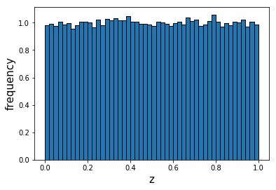
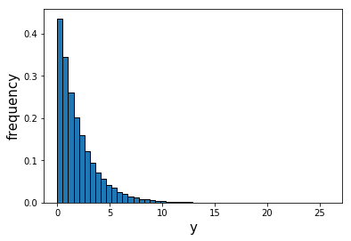
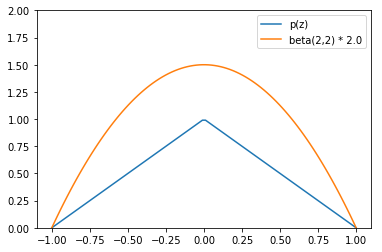
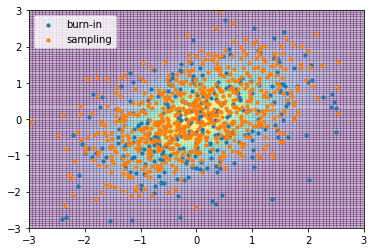

<!doctype html>
<html lang="ja">
  <head>
    <meta charset="utf-8">
    <meta name="viewport" content="width=device-width, initial-scale=1">
    <link rel="stylesheet" href="../../static/css/atom.min.css">
    <!--
      Hi source code lover!!

      I don't want to be a YouTuber.
      I want to make a platform where people can share and learn college knowledge one another.
      If you are interested it, please get in touch with me. (Twitter: @cabernet_rock)
    -->

    <!-- SEO -->
    <title>10 minutes PRML Chapter 11</title>
    <meta name="description" content="Learn Pattern Recognition and Machine Learning in 10 minutes.">

    <!-- URL CANONICAL -->
    <!-- <link rel="canonical" href="http://your-url.com/permalink"> -->

    <!-- Google Fonts -->
    <link href="https://fonts.googleapis.com/css?family=Roboto:100,100i,300,300i,400,400i,700,700i%7CMaitree:200,300,400,600,700&amp;subset=latin-ext" rel="stylesheet">

    <!-- CSS Base -->
    <link rel="stylesheet" type='text/css' media='all' href="prml_static/css/webslides.css">

    <!-- Optional - CSS SVG Icons (Font Awesome) -->
    <link rel="stylesheet" type="text/css" media="all" href="prml_static/css/svg-icons.css">

    <!-- SOCIAL CARDS (Open Graph protocol) -->
    <!-- FACEBOOK -->
    <meta property="og:url" content="https://iwasakishuto.github.io">
    <meta property="og:type" content="article">
    <meta property="og:title" content="10 minutes PRML Chapter 11">
    <meta property="og:description" content="Learn Pattern Recognition and Machine Learning in 10 minutes.">
    <meta property="og:image" content="prml_static/images/share-webslides.jpg" >

    <!-- TWITTER -->
    <meta name="twitter:card" content="summary_large_image">
    <meta name="twitter:creator" content="@cabernet_rock">
    <meta name="twitter:title" content="10 minutes PRML Chapter 11">
    <meta name="twitter:description" content="Learn Pattern Recognition and Machine Learning in 10 minutes.">
    <meta name="twitter:image" content="prml_static/images/share-webslides.jpg">

    <!-- FAVICONS -->
    <link rel="shortcut icon" sizes="16x16" href="prml_static/images/favicons/favicon.png">
    <link rel="shortcut icon" sizes="32x32" href="prml_static/images/favicons/favicon-32.png">
    <link rel="apple-touch-icon icon" sizes="76x76" href="prml_static/images/favicons/favicon-76.png">
    <link rel="apple-touch-icon icon" sizes="120x120" href="prml_static/images/favicons/favicon-120.png">
    <link rel="apple-touch-icon icon" sizes="152x152" href="prml_static/images/favicons/favicon-152.png">
    <link rel="apple-touch-icon icon" sizes="180x180" href="prml_static/images/favicons/favicon-180.png">
    <link rel="apple-touch-icon icon" sizes="192x192" href="prml_static/images/favicons/favicon-192.png">

    <!-- Android -->
    <meta name="mobile-web-app-capable" content="yes">
    <meta name="theme-color" content="#333333">

    <!-- Syntax highlight -->
    <link rel="stylesheet" href="https://cdnjs.cloudflare.com/ajax/libs/highlight.js/8.6/styles/github.min.css">
    <script src="https://cdnjs.cloudflare.com/ajax/libs/highlight.js/8.6/highlight.min.js"></script>
    <script>hljs.initHighlightingOnLoad();</script>
    <!-- Tex -->
    <!-- Local env -->
    <script type="text/javascript" src="http://cdn.mathjax.org/mathjax/latest/MathJax.js?config=TeX-AMS_HTML"></script>
    <!-- Github env -->
    <!--
    <script type="text/javascript" async src="//cdn.mathjax.org/mathjax/latest/MathJax.js?config=TeX-MML-AM_CHTML"></script>
    -->
    <script type="text/x-mathjax-config">
      MathJax.Hub.Config({
        tex2jax: {
          inlineMath: [ ['$','$'], ["\\(","\\)"] ],
          displayMath: [ ['$$','$$'], ["\\[","\\]"] ]
        }
      });
    </script>
  </head>

  <body>
    <header role="banner">
      <nav role="navigation">
        <ul>
          <li class="github">
            <a rel="external" href="#" title="YouTube">
              <svg class="fa-youtube">
                <use xlink:href="#fa-youtube"></use>
              </svg>
              <em>Colledge Knowledge</em>
            </a>
          </li>
          <li class="twitter">
            <a rel="external" href="https://twitter.com/cabernet_rock" title="Twitter">
              <svg class="fa-twitter">
                <use xlink:href="#fa-twitter"></use>
              </svg>
              <em>@cabernet_rock</em>
            </a>
          </li>
        </ul>
      </nav>
    </header>

    <main role="main">
      <article id="webslides">

        <!-- Quick Guide
          - Each parent <section> in the <article id="webslides"> element is an individual slide.
          - Vertical sliding = <article id="webslides" class="vertical">
          - <div class="wrap"> = container 90% / <div class="wrap size-50"> = 45%;
        -->

        <section class="bg-apple">
          <h1>§11 Sampling Methods</h1>
        </section>

        <section class="bg-apple">
          <div class="wrap">
            <div class="grid vertical-align">
              <div class="column">
                <h2>モンテカルロ法</h2>
                <p class="text-intro">Monte Carlo method, MC</p>
                <p>実用的な興味のあるほとんどの確率モデルに対して、厳密な推論は手に負えないため、なんらかの形の近似に頼る必要があります。</p>
                <p>Chap.10 では、変分ベイズ法やEP法などのを<font color="red"><b>決定的な近似法</b></font>を紹介しました。ここでは、モンテカルロ法と呼ばれる、<font color="red"><b>「乱数を用いて行う数値計算」による近似法</b></font>について紹介します。</p>
                <p>なお、ここで考えるのは、ある関数 $f(\mathbf{z})$ の確率分布 $p(\mathbf{z})$ の下での期待値
                $$\mathbb{E}[f]=\int f(\mathbf{z}) p(\mathbf{z}) \mathrm{d} \mathbf{z}\qquad (11.1)$$の計算であり、事後分布の期待値を評価することで予測を行う際などに必要とされます。</p>
              </div>
              <div class="column">
                <p>サンプリング法の背後にある基本的なアイデアは、分布 $p(\mathbf{z})$ から独立に抽出されたサンプルの集合 $\mathbf{z}^{(l)}(l=1,\ldots,L)$ を得ることで、期待値を
                $$\widehat{f}=\frac{1}{L} \sum_{l=1}^{L} f\left(\mathbf{z}^{(l)}\right)\qquad (11.2)$$の有限和で近似することです。</p>
                <p>サンプル $\mathbf{z}^{(l)}$ が分布 $p(\mathbf{z})$ に従って抽出される限り、
                $$\begin{aligned}
                \mathbb{E}_{\mathbf{Z}}[\hat{f}]
                & = \int \hat{f} p(\mathbf{Z}) d \mathbf{Z}=\int\left(\frac{1}{L} \sum_{l=1}^{L} f\left(\mathbf{z}^{(l)}\right)\right) p\left(\mathbf{z}^{(1)}\right) \cdots p\left(\mathbf{z}^{(L)}\right) d \mathbf{z}^{(1)}\cdots d \mathbf{z}^{(L)}\\
                & = \frac{1}{L}\left\{\int f\left(\mathbf{z}^{(1)}\right) p\left(\mathbf{z}^{(1)}\right) \cdots p\left(\mathbf{z}^{(L)}\right) d \mathbf{z}^{(1)} \cdots d \mathbf{z}^{(L)} + \cdots + \int f\left(\mathbf{z}^{(L)}\right)p\left(\mathbf{z}^{(1)}\right) \cdots p\left(\mathbf{z}^{(L)}\right)d \mathbf{z}^{(1)} \cdots d \mathbf{z}^{(L)}\right\}\\
                & = \frac{1}{L}\left\{\int f\left(\mathbf{z}^{(1)}\right) p\left(\mathbf{z}^{(1)}\right) d \mathbf{z}^{(1)} + \cdots + \int f\left(\mathbf{z}^{(L)}\right) p\left(\mathbf{z}^{(L)}\right) d \mathbf{z}^{(L)}+\cdots\right\}\\
                & = \frac{1}{L}\sum_{l=1}^{L} \int f\left(\mathbf{z}^{(l)}\right) p\left(\mathbf{z}^{(l)}\right) d \mathbf{z}^{(l)}=\frac{1}{L} \sum_{l=1}^{L} \mathbb{E}_{\mathbf{z}^{(l)}}[f]=\mathbb{E}_{\mathbf{z}}[f]
                \end{aligned}$$ が成り立ち、推定量 $\widehat{f}$ は正しい平均を持つことになります。</p>
              </div>
            </div>
          </div>
        </section>

        <section class="bg-apple">
          <div class="wrap">
            <div class="grid vertical-align">
              <div class="column">
                <p>また、分散に関しても、
                $$\operatorname{var}[\hat{f}]=\mathbb{E}\left[(\hat{f}-\mathbb{E}[\hat{f}])^{2}\right]=\mathbb{E}\left[\hat{f}^{2}\right]-(\mathbb{E}[f])^{2}$$
                $$\mathbb{E}\left[\hat{f}^{2}\right]=\int \hat{f}^{2} p(\mathbf{Z}) d \mathbf{Z}=\frac{1}{L} \mathbb{E}\left[f^{2}\right]+\frac{L-1}{L}(\mathbb{E}[f])^{2}$$の二式より、
                $$\operatorname{var}[\widehat{f}]=\frac{1}{L} \mathbb{E}\left[(f-\mathbb{E}[f])^{2}\right]\qquad (11.3)$$が成り立つことがわかり、関数 $f(\mathbf{z})$ の分布 $p(\mathbf{z})$ の下での分散を表すことがわかります。</p>
                <p>これより、推定量の精度は $\mathbf{z}$ の次元数に依存せず、原理的には比較的少数のサンプル $\mathbf{z}^{(l)}$ で高い精度が達成できることがわかりますが、実際に、$10$ ~ $20$ 程度の独立なサンプルがあれば十分な精度で期待値を推定できることが知られています。</p>
              </div>
              <div class="column">
                <p>しかし、問題はサンプル $\{\mathbf{z}^{(l)}\}$ が独立でないかも知れず、実効的なサンプルサイズが見かけのサンプルサイズよりもずっと少ないかも知れないことです。これは、一般に判断が難しい問題になっています。</p>
                <p>また、もし $p(\mathbf{z})$ が大きい領域で $f(\mathbf{z})$ が小さく、逆に $p(\mathbf{z})$ が小さい領域で $f(\mathbf{z})$ が大きいならば、期待値は小さな確率の領域から大きな影響を受けることがあり、十分な精度を得るためには比較的大きなサンプルサイズが必要となります。</p>
                <p>したがって、効率よく独立同分布に従ってサンプリングをするアルゴリズムが必要となります。</p>
                <p>そこで、ここから各種サンプリングアルゴリズムを紹介しますが、区間 $(0,1)$ で一様に分布する擬似乱数(pseudo-random number)を生成するアルゴリズムはすでにあるものとします。</p>
              </div>
            </div>
          </div>
        </section>

        <section class="bg-apple">
          <div class="wrap">
            <div class="grid vertical-align">
              <div class="column">
                <h2>変換法</h2>
                <p>まずは単純な非一様分布から乱数を生成する方法を考えます。$z$ が区間 $(0,1)$ で一様に分布し、ある関数 $f(\cdot)$ を用いて $z$ の値を $y=f(z)$ のように変換するとします。この時 $y$ の分布は
                $$p(y)=p(z)\left|\frac{d z}{d y}\right|\qquad (11.5)$$に従います。なお、ここでは $p(z) = 1$ です。</p>
                <p>目的は、変換後の $y$ の値が、求めたい特定の分布 $p(y)$ に従うように関数 $f(y)$ を選ぶことです。上の式を積分することで、
                $$z=h(y) \equiv \int_{-\infty}^{y} p(\widehat{y}) \mathrm{d} \widehat{y}\qquad (11.6)$$が得られます。これは $p(y)$ の不定積分です。また、$y=h^{-1}(z)$ となるので、<font color="red"><b>乱数を生成したい分布の不定積分の逆関数</b></font>が求められれば、一様分布を用いて乱数を生成できることがわかります。</p>
              </div>
              <div class="column">
                <p class="text-intro">指数分布</p>
                <p>例えば、指数分布(exponential distribution)
                $$p(y)=\lambda \exp (-\lambda y)\qquad (11.7)$$
                からサンプリングしたいが、直接サンプリングすることが難しいとします。この時、
                $$z = h(y) = \int_{-\infty}^yp(\widehat{y}) \mathrm{d} \widehat{y}$$より、
                $$z = h(y) = 1-\exp (-\lambda y)$$ となります。よって、一様分布する $z$ を
                $$y = \lambda^{-1}\ln (1-z)$$に代入して変換すれば、$y$ は指数分布に従うことになります。</p>
              </div>
            </div>
          </div>
        </section>

        <section class="bg-apple">
          <div class="wrap">
            <div class="grid vertical-align">
              <div class="column" align="center">
                <pre>
                  <code class="python">
import numpy as np
import matplotlib.pyplot as plt
z = np.random.uniform(0,1,100000)

plt.hist(z,bins=50, density=True, ec='black')
plt.xlabel("z", size=15)
plt.ylabel("frequency", size=15)
plt.show()
                  </code>
                </pre>
                <figure>
                  
                </figure>
              </div>
              <div class="column" align="center">
                <pre>
                  <code class="python">
h = lambda x:-2 * np.log(1-x)
plt.hist(np.vectorize(h)(z), bins=50, density=True, ec='black')
plt.xlabel("y", size=15)
plt.ylabel("frequency", size=15)
plt.show()
                  </code>
                </pre>
                <figure>
                  
                </figure>
              </div>
            </div>
          </div>
        </section>

        <section class="bg-apple">
          <div class="wrap">
            <div class="grid vertical-align">
              <div class="column">
                <h2>棄却サンプリング</h2>
                <p class="text-intro">rejection sampling</p>
                <p>変換法がうまく働くには、求めたい分布の不定積分を計算し、その逆関数を求めることが可能である必要がありましたが、そのような操作は限られた数の単純な分布に対してしか可能ではありません。</p>
                <p>そこで、より一般的な戦略を求めて、別のアプローチを考えます。</p>
                <p>ここで紹介する棄却サンプリングの枠組みは、ある制約の下で比較的複雑な分布からサンプリングすることを可能とします。</p>
              </div>
              <div class="column">
                <p>まず、問題の条件として、分布 $p(\mathbf{z})$ からサンプリングしたいが、直接サンプリングするのが困難だとします。</p>
                <p>少し広げると、任意の与えられた $\mathbf{z}$ の値について、$p(\mathbf{z})$ を求めることは、ある正規化定数 $\mathbf{Z}$ を除いて容易だとします。すなわち、
                $$p(z)=\frac{1}{Z_{p}} \widetilde{p}(z)\qquad (11.13)$$において、$\widetilde{p}(z)$ はすぐに求められるが、$Z_p$ はわからないとします。</p>
                <p>ここで、簡単のために $1$ 変数の関数を考えましたが、多次元への拡張も可能です。</p>
              </div>
            </div>
          </div>
        </section>

        <section class="bg-apple">
          <div class="wrap">
            <div class="grid vertical-align">
              <div class="column">
                <h2>棄却サンプリング</h2>
                <p class="text-intro">rejection sampling</p>
                <p>棄却サンプリングを適用するには、容易にサンプルを抽出することができる、より簡単なサンプリング分布 $q(z)$ を必要とします。これは、<font color="red"><b>提案分布(proposal distribution)</b></font>と呼ばれます。</p>
                <p>次に、定数 $k$ を導入し、$\forall z$ について $kq(z)\geq\widetilde{p}(z)$ が成り立つようにその値を決めます。</p>
                <p>すると、次の流れによって求めたい分布からのサンプリングが可能になります。</p>
                <ol>
                  <li>乱数 $z_0$ を分布 $q(z)$ から生成する。</li>
                  <li>乱数 $u_0$ を区間 $[0,kq(z_0)]$ 上の一様分布から生成する。</li>
                  <li>$u_0 > \widetilde{p}(z_0)$ ならサンプルは棄却され、そうでなければ $z_0$ が保持される。</li>
                </ol>
              </div>
              <div class="column">
                <figure>
                  
                </figure>
                <p>この時、$z$ のもともとの値は分布 $q(z)$ から生成され、それらのサンプルが確率 $\widetilde{p}(z)/kq(z)$ で受理されるので、一つのサンプルが受理される確率は
                $$\begin{aligned}
                p(\text { accept })
                & =\int\{\widetilde{p}(z) / k q(z)\} q(z) \mathrm{d} z \\
                & =\frac{1}{k} \int \widetilde{p}(z) \mathrm{d} z
                \end{aligned}$$で与えられます。</p>
                <p>そのため、棄却サンプリング法で棄却される点の割合は、正規化されていない分布 $\widetilde{p}(z)$ の下側の領域と曲線 $kq(z)$ の下側の領域との割合になります。</p>
                <p>よって、制約条件の中でできる限り $k$ を小さくすることが求められます。</p>
              </div>
            </div>
          </div>
        </section>

        <section class="bg-apple">
          <div class="wrap">
            <div class="grid vertical-align">
              <div class="column">
                <h2>棄却サンプリング</h2>
                <p class="text-intro">rejection sampling</p>
                <p>それでは、実際に棄却サンプリングを行いたいと思います。ここでは、人工的に作った以下の分布
                $$p(z) = 1-|z|\quad (|z|\geq 1)$$からサンプリングしたいと思います。</p>
                <p>ここで、提案分布は以下のベータ分布を使います。
                $$ f(z;\alpha, \beta)= \frac{z^{\alpha-1}(1-x)^\beta-1}{B(\alpha, \beta)}\quad (\alpha=2,\beta=2)$$</p>
              </div>
              <div class="column">
                <figure>
                  
                </figure>
                <p>この分布から棄却サンプリングを行うと、以下のようにサンプリングができます。</p>
                <figure>
                  
                </figure>
                <p>なお、このプログラムは<a href="prml_static/images/Chap11/rejection sampling.py" download="rejection_sampling.py">これ</a>になります。</p>
              </div>
            </div>
          </div>
        </section>

        <section class="bg-apple">
          <div class="wrap">
            <div class="grid vertical-align">
              <div class="column">
                <h2>適応的棄却サンプリング</h2>
                <p class="text-intro">adaptive rejection sampling</p>
                <p>棄却サンプリングを適用したい多くの場合において、適切な包絡分布 $q(z)$ を解析的な形で決定することは難しいです。</p>
                <p>そこで、分布 $p(z)$ の観測値に基づいてその場で包絡関数を構築するアプローチをとります。この方法は、$p(z)$ が対数凹、つまり $\ln p(z)$ の導関数が $z$ の非増加関数である場合に特に簡単になります。流れは、</p>
                <ol>
                  <li>関数 $\ln p(z)$ とその勾配をグリッド点の初期集合で求め、包絡分布 $q(z)$ で $p(z)$ を覆う。</li>
                  <li>$z_0$ をサンプリングし、区間 $[0,q(z_0)]$ で一様分布から $u_0$ を発生させる。</li>
                  <li>$u_0 > \widetilde{p}(z_0)$ なら $z_0$ は棄却し、$z_0$ を包絡分布の接点に生かす。</li>
                  <li>$u_0 \leq \widetilde{p}(z_0)$ なら $z_0$ は $p(z)$ に従うサンプリングとして得られる。</li>
                </ol>
              </div>
              <div class="column">
                <p>この時、包絡分布の対数は線形関数の連なりであり、包絡分布自体も
                $$q(z)=k_{i} \lambda_{i} \exp \left\{-\lambda_{i}\left(z-z_{i-1}\right)\right\} \quad \hat{z}_{i-1} < z \leqslant \hat{z}_{i}\qquad (11.17)$$
                の区分的な指数分布( $\hat{z}_{i}$ は $z_{i}$ での接線と $z_i$ での接線の交点、$\lambda_i$ は $z_i$ での接線の傾き、$k_i$ は対応するオフセットです。)</p>
                <figure>
                  
                </figure>
              </div>
            </div>
          </div>
        </section>

        <section class="bg-apple">
          <div class="wrap">
            <div class="grid vertical-align">
              <div class="column">
                <h2>適応的棄却サンプリング</h2>
                <p class="text-intro">adaptive rejection sampling</p>
                <p>ここで、サンプル点が棄却されるにつれてグリッド点の集合が増えるため、求めたい分布 $p(z)$ をより精度良く近似できることになります。</p>
                <p>また、以下の区分的な指数分布からサンプリングできることは、明らかです。
                $$q(z)=k_{i} \lambda_{i} \exp \left\{-\lambda_{i}\left(z-z_{i-1}\right)\right\} \quad \hat{z}_{i-1} < z \leqslant \hat{z}_{i}\qquad (11.17)$$</p>
                <p>各区分における積分を $P_i$ とします。
                $$\begin{aligned}
                P_{i}
                & =\int_{\hat{z}_{i}, i+1}^{\hat{z}_{i, i+1}} q(z) d z=\int_{\hat{z}_{i}-1, i}^{\hat{z}_{i, i+1}} k_{i} \lambda_{i} \exp \left\{-\lambda_{i}\left(z-z_{i}\right)\right\} d z \\
                & =k_{i} \lambda_{i} \frac{-1}{\lambda_{i}}\left[\exp \left\{-\lambda_{i}\left(z-z_{i}\right)\right\}\right]_{\hat{z}_{i-1, i}}^{\hat{z}_{i, i+1}} \\
                & =k_{i}\left[\exp \left\{-\lambda_{i}\left(\hat{z}_{i-1, i}-z_{i}\right)\right\}-\exp \left\{-\lambda_{i}\left(\hat{z}_{i, i+1}-z_{i}\right)\right\}\right]
                \end{aligned}$$</p>
              </div>
              <div class="column">
                <p>ここで、$y$ が $i=M$ の区分にあるとすると、(11.6)より、
                $$\begin{aligned}
                z
                & =h(y)=\int_{0}^{y} q(z) d z=\sum_{i=1}^{M-1} P_{i}+\int_{\hat{z}_{i-1, i}}^{y} q(z) dz \\
                & =\sum_{i=1}^{M-1} P_{i}+k_{M}\left[\exp \left\{-\lambda_{M}\left(\hat{z}_{M-1, M}-z_{M}\right)\right\}-\exp \left\{-\lambda_{M}\left(y-z_{M}\right)\right\}\right]
                \end{aligned}$$となります。よって、これを $y$ について解くことで、
                $$\begin{aligned}
                y
                & =h^{-1}(z)\\
                & =-\frac{1}{\lambda_{M}} \ln \left[\exp \left\{-\lambda_{M}\left(\hat{z}_{M-1, M}-z_{M}\right)\right\}-\frac{1}{k_{M}}\left(z-\sum_{i=1}^{M-1} P_{i}\right)\right]+z_{M}
                \end{aligned}$$</p>
                <p>これによって、$z$ の一様分布を $y$ の分布に変換することができます。</p>
              </div>
            </div>
          </div>
        </section>

        <section class="bg-apple">
          <div class="wrap">
            <div class="grid vertical-align">
              <div class="column">
                <h2>重点サンプリング</h2>
                <p class="text-intro">importance sampling</p>
                <p><font color="red"><b>重点サンプリング(importance sampling)</b></font>は、期待値を直接近似する枠組みを提供しますが、それ自体は分布 $p(\mathbf{z})$ からのサンプルを抽出する仕組みを提供する訳ではありません。</p>
                <p>ここで、分布 $p(\mathbf{z})$ からサンプルを抽出することはできないが、任意の $\mathbf{z}$ に対して $p(\mathbf{z})$ を計算することはできるとします。</p>
                <p>棄却サンプリングの場合と同様に、重点サンプリングもサンプリングが容易な<font color="red"><b>提案分布(proposal destribution)</b></font> $q(\mathbf{z})$ の利用に基づきます。</p>
                <p>このとき、求めたい期待値を、$q(\mathbf{z})$ からサンプリングさせた $\{\mathbf{z}^{(l)}\}$ の有限和で近似することを考え、その時に $r_l = p(\mathbf{z}^{(l)}) / q(\mathbf{z}^{(l)})$ で表される<font color="red"><b>重要度重み(importance weight)</b></font>を利用することで、求めたいものとは異なった分布からサンプリングすることで生じてしまうバイアスを補正します。</p>
              </div>
              <div class="column">
                <p>具体的には、以下のように計算します。
                $$\begin{aligned}
                \mathbb{E}[f]
                & =\int f(\mathbf{z}) p(\mathbf{z}) \mathrm{d} \mathbf{z} \\
                & =\int f(\mathbf{z}) \frac{p(\mathbf{z})}{q(\mathbf{z})} q(\mathbf{z}) \mathrm{d} \mathbf{z} \\
                & \simeq \frac{1}{L} \sum_{l=1}^{L} \frac{p\left(\mathbf{z}^{(l)}\right)}{q\left(\mathbf{z}^{(l)}\right)} f\left(\mathbf{z}^{(l)}\right)\qquad (11.19)
                \end{aligned}$$</p>
                <p>分布 $p(\mathbf{z})$ が、$p(\mathbf{z}) = \widetilde{p}(z) / Z_p$ のように、正規化定数を除いてしか評価できないことや、$q(\mathbf{z}) = \widetilde{q}(z) / Z_q$ を用いたいこともよくあります。そうすると、以下のように計算できます。
                $$\begin{aligned}
                \mathbb{E}[f]
                & =\int f(\mathbf{z}) p(\mathbf{z}) \mathrm{d} \mathbf{z} \\
                & =\frac{Z_{q}}{Z_{p}} \int f(\mathbf{z}) \frac{\widetilde{p}(\mathbf{z})}{\widetilde{q}(\mathbf{z})} q(\mathbf{z}) \mathrm{d} \mathbf{z} \\
                & \simeq \frac{Z_{q}}{Z_{p}} \frac{1}{L} \sum_{l=1}^{L} \widetilde{r}_{l} f\left(\mathbf{z}^{(l)}\right)\qquad (11.20)
                \end{aligned}$$</p>
              </div>
            </div>
          </div>
        </section>

        <section class="bg-apple">
          <div class="wrap">
            <div class="grid vertical-align">
              <div class="column">
                <h2>重点サンプリング</h2>
                <p class="text-intro">importance sampling</p>
                <p>(11.20)を評価するには比率 $Z_p / Z_q$ の評価が必要になりますが、これは
                $$\begin{aligned}
                \frac{Z_{p}}{Z_{q}}
                & =\frac{1}{Z_{q}} \int \widetilde{p}(\mathbf{z}) \mathrm{d} \mathbf{z}=\int \frac{\widetilde{p}(\mathbf{z})}{\widetilde{q}(\mathbf{z})} q(\mathbf{z}) \mathrm{d} \mathbf{z} \\
                & \simeq \frac{1}{L} \sum_{l=1}^{L} \widetilde{r}_{l}\qquad (11.21)
                \end{aligned}$$</p>
                <p>によってできます。したがって、以下のようにかけます。
                $$\mathbb{E}[f] \simeq \sum_{l=1}^{L} w_{l} f\left(\mathbf{z}^{(l)}\right)\qquad (11.22)$$
                $$w_{l}=\frac{\widetilde{r}_{l}}{\sum_{m} \widetilde{r}_{m}}=\frac{\widetilde{p}\left(\mathbf{z}^{(l)}\right) / q\left(\mathbf{z}^{(l)}\right)}{\sum_{m} \widetilde{p}\left(\mathbf{z}^{(m)}\right) / q\left(\mathbf{z}^{(m)}\right)}\qquad (11.23)$$</p>
              </div>
              <div class="column">
                <p>棄却サンプリングと同様に、重点サンプリングによるアプローチが成功するか否かも、サンプリング分布 $q(\mathbf{z})$ が求めたい分布 $p(\mathbf{z})$ にどの程度適合しているかに決定的に依存します。</p>
                <p>重点サンプリングでは、例えば $\mathbf{z}$ 空間の比較的小さな領域に確率のかなりの割合が集中するときなど、いくらでも大きな誤差のある結果を生成する可能性がありますが、それを診断するための指標が得られないことに注意する必要があります。</p>
                <p>このことから、<font color="red"><b>$p(\mathbf{z})$ が大きな領域で小さな確率や確率 $0$ であってはならない</b></font>という、サンプリング分布 $q(\mathbf{z})$ の重要な条件があります。</p>
              </div>
            </div>
          </div>
        </section>

        <section class="bg-apple">
          <div class="wrap">
            <div class="grid vertical-align">
              <div class="column">
                <h2>重点サンプリング</h2>
                <p class="text-intro">importance sampling</p>
                <p>例えば、標準正規分布 $\mathcal{N}(0,1)$ における確率 $P(z\geq 0)=\int_2^{\infty}p(z)$ を考えます。</p>
                <p>ここで、$\mathcal{N}(0,1)$ からサンプリングするのは非効率的なので、精度を上げるために重点的サンプリングを行います。</p>
                <p>例えば指数分布は $x\geq 0$ という形の領域に分布する(上に、$x=0$ で値が $0$ でない)ため、使い勝手が非常に良いです。
                $$ f(x;\lambda) = \left\{\begin{array}{cc}\lambda e^{-\lambda x} & (x \geq 0) \\0 & (x < 0)\end{array}\right.$$</p>
              </div>
              <div class="column">
                <figure>
                  
                </figure>
                <p>標準正規分布 $\mathcal{N}(0,1)$ における確率 $P(z\geq 0)=\int_2^{\infty}p(z)$</p>
                <figure>
                  
                </figure>
                <p>指数分布</p>
              </div>
            </div>
          </div>
        </section>

        <section class="bg-apple">
          <div class="wrap">
            <div class="grid vertical-align">
              <div class="column">
                <h2>その他のアルゴリズム</h2>
                <p class="text-intro">SIR(Sampling Importance Resampling)</p>
                <p>棄却サンプリングでは、$q(z)$ と $k$ の選び方が大事ですが、現実的にはうまい組み合わせを発見するのは厳しいです。そこで、重点サンプリングの重要度重み $r_l = p(\mathbf{z}^{(l)}) / q(\mathbf{z}^{(l)})$ を有効活用することでうまいサンプリング法を探します。</p>
                <ol>
                  <li>提案分布 $q(\mathbf{z})$ から $L$ 個のサンプル $\mathbf{z}$ を抽出する。</li>
                  <li>$$w_{l}=\frac{\widetilde{r}_{l}}{\sum_{m} \widetilde{r}_{m}}=\frac{\widetilde{p}\left(\mathbf{z}^{(l)}\right) / q\left(\mathbf{z}^{(l)}\right)}{\sum_{m} \widetilde{p}\left(\mathbf{z}^{(m)}\right) / q\left(\mathbf{z}^{(m)}\right)}\qquad (11.23)$$によって重み $w_l$ を計算する</li>
                  <li>$2$ セット目の $L$ 個のサンプルが、重み $\mathbf{w}$ で与えられる確率に従って離散分布 $\mathbf{z}$ から抽出される。</li>
                </ol>
              </div>
              <div class="column">
                <p class="text-intro">モンテカルロEMアルゴリズム</p>
                <p>モンテカルロ法はベイズ的枠組みを直接実装する仕組みを提供するだけでなく、例えば最尤解を求めるといった頻度論的パラダイムにおいても利用することができます。</p>
                <p>特にEMアルゴリズムにおいてEステップを解析的に実行できないモデルにおいて、サンプリング法がEステップを近似的に実行することが可能になります。この時、以下のように近似します。
                $$\begin{aligned}
                Q\left(\boldsymbol{\theta}, \boldsymbol{\theta}^{\text { old }}\right)
                & =\int p(\mathbf{Z} | \mathbf{X}, \boldsymbol{\theta}^{\text { old }}) \ln p(\mathbf{Z}, \mathbf{X} | \boldsymbol{\theta}) \mathrm{d} \mathbf{Z}
                & (11.28)\\
                Q\left(\boldsymbol{\theta}, \boldsymbol{\theta}^{\mathrm{old}}\right)
                & \simeq \frac{1}{L} \sum_{l=1}^{L} \ln p\left(\mathbf{Z}^{(l)}, \mathbf{X} | \boldsymbol{\theta}\right)
                & (11.29)
                \end{aligned}$$</p>
                <p>この手法を応用して、EMアルゴリズムのようにIステップとPステップでパラメータ $\mathbf{\theta}$ を事後分布からサンプリングする<font color="red"><b>データ拡大アルゴリズム(data augmentation algorithm)</b></font>も存在します。</p>
              </div>
            </div>
          </div>
        </section>

        <section class="bg-apple">
          <div class="wrap">
            <div class="grid vertical-align">
              <div class="column">
                <h2>マルコフ連鎖</h2>
                <p class="text-ntro">Markov Chain</p>
                <p>マルコフ連鎖は、一連の確率変数 $\mathbf{z}^{(1)},\ldots,\mathbf{z}^{(M)}$ で、現在の状態が決まっていれば、過去および未来の状態が独立であるもののことを言います。</p>
                <p>特に一次マルコフ連鎖に関しては、$m\in\{1,\ldots,M-1\}$ について、以下の条件付き独立性
                $$p\left(\mathbf{z}^{(m+1)} | \mathbf{z}^{(1)}, \ldots, \mathbf{z}^{(m)}\right)=p\left(\mathbf{z}^{(m+1)} | \mathbf{z}^{(m)}\right)\qquad (11.37)$$が成立するものとして定義されます。</p>
                <p>ここで、初期変数 $p(\mathbf{z}^{(0)})$ の確率分布と、<font color="red"><b>遷移確率 (transition probability)</b></font> $T_m(\mathbf{z}^{(m)},\mathbf{z}^{(m+1)})\equiv p(\mathbf{z}^{(m+1)}|\mathbf{z}^{(m)})$ の形で後続変数の条件付き確率を与えることで、マルコフ連鎖を指定することができます。</p>
              </div>
              <div class="column">
                <p>また、全ての $m$ について遷移確率 $T_m$ が等しいマルコフ連鎖を、<font color="red"><b>均一マルコフ連鎖(homogeneous Markov chain)</b></font>と呼びます。</p>
                <p>特定の変数の周辺確率は、連鎖における一つ前の変数の周辺確率を用いて
                $$p\left(\mathbf{z}^{(m+1)}\right)=\sum_{\mathbf{z}^{(m)}} p\left(\mathbf{z}^{(m+1)} | \mathbf{z}^{(m)}\right) p\left(\mathbf{z}^{(m)}\right)\qquad (11.38)$$
                の形で表されます。分布がマルコフ連鎖の各ステップで変わらないとき、その分布はその連鎖に関して<font color="red"><b>不変</b></font>あるいは<font color="red"><b>定常</b></font>であると呼ばれます。そのため、遷移確率が $T(\mathbf{z}^{\prime},\mathbf{z})$ である均一マルコフ連鎖において、
                $$p^{\star}(\mathbf{z})=\sum_{\mathbf{z}^{\prime}} T\left(\mathbf{z}^{\prime}, \mathbf{z}\right) p^{\star}\left(\mathbf{z}^{\prime}\right)\qquad (11.39)$$
                が成り立つ場合、分布 $p^{\star}(\mathbf{z})$ は不変です。</p>
                <p>なお、遷移確率が恒等変換であった場合に任意の分布が不変になるよう、<font color="red"><b>与えられた一つのマルコフ連鎖が二つ以上の不変分布を持ち得る</b></font>ことに注意してください。</p>
              </div>
            </div>
          </div>
        </section>

        <section class="bg-apple">
          <div class="wrap">
            <div class="grid vertical-align">
              <div class="column">
                <h2>マルコフ連鎖</h2>
                <p class="text-ntro">Markov Chain</p>
                <p>マルコフ連鎖がある不変分布 $p(\mathbf{z}^{\prime})$ に収束すれば、<font color="red"><b>マルコフ過程を乱数生成器としてみなす</b></font>ことが可能になります。そこで重要となる二つの性質について紹介します。</p>
                <p class="text-ntro">エルゴート性</p>
                <p>エルゴート性は、$m\rightarrow\infty$ のときに、初期分布 $p(\mathbf{z}^{(0)})$ の選択にかかわらず、分布 $p(\mathbf{z}^{(m)})$ が求めたい不変分布 $p(\mathbf{z})^{\star}$ に収束することを保証する条件で、以下の $3$ つからなります。</p>
                <ul class="description">
                  <li>
                    <span class="text-label">既約性</span>
                    ある状態から全ての状態に遷移が可能
                  </li>
                  <li>
                    <span class="text-label">正再帰性</span>
                    ある状態から再び同じ情報に戻ってくるまでにかかる時間が有限
                  </li>
                  <li>
                    <span class="text-label">非同期性</span>
                    決まった周期性がなく、ランダムに動く
                  </li>
                </ul>
              </div>
              <div class="column">
                <p class="text-intro">詳細釣り合い条件</p>
                <p>求めたい分布 $p(\mathbf{z})$ が不変分布であることを保証するための十分条件は、分布 $p(\mathbf{z})^{\star}$ に対して
                $$p^{\star}(\mathbf{z})p\left(\mathbf{z}^{\prime} | \mathbf{z}\right) = p^{\star}\left(\mathbf{z}^{\prime}\right) p\left(\mathbf{z} | \mathbf{z}^{\prime}\right)\qquad (11.40)$$
                で定義される<font color="red"><b>詳細釣り合い条件(detailed balance)</b></font>が満たされることで、つまりは<font color="red"><b>「局所的には逆戻りが可能である」</b></font>ということです。</p>
                <p>ここで、
                $$\sum_{\mathbf{z}^{\prime}}p^{\star}(\mathbf{z}^{\prime})p(\mathbf{z}|\mathbf{z}^{\prime})
                = \sum_{\mathbf{z}^{\prime}}p^{\star}(\mathbf{z})p(\mathbf{z}^{\prime}|\mathbf{z})
                = p^{\star}(\mathbf{z})\sum_{\mathbf{z}^{\prime}}p(\mathbf{z}^{\prime}|\mathbf{z})
                = p^{\star}(\mathbf{z})\qquad (11.41)$$より、詳細釣り合い条件が成り立つ時に分布が不変なことがわかります。</p>
              </div>
            </div>
          </div>
        </section>

        <section class="bg-apple">
          <div class="wrap">
            <div class="grid vertical-align">
              <div class="column">
                <h2>Metropolis-Hastings</h2>
                <p>それでは実際にマルコフ過程からサンプリングをしますが、ここで問題となるのが遷移確率 $T$ をどのようにして決めるか、ということです。</p>
                <p>ここで、棄却サンプリングを利用します。手順は、次の通りです。</p>
                <p>なお、このときマルコフ連鎖の最初の方は初期状態への依存性が高いので実際に利用するときはサンプルから除外します。このことを、<font color="red"><b>バーンイン(burn-in)</b></font>と呼びます。</p>
              </div>
              <div class="column">
                <p class="text-intro">MH法</p>
                <ol>
                  <li>目標分布を $p(\mathbf{z}) = \widetilde{p}(\mathbf{z})/Z_p$, 提案分布を $q(\mathbf{z}|\mathbf{z}^{\tau})$ とします。</li>
                  <li>提案分布 $q(\mathbf{z}|\mathbf{z}^{\tau})$ に従ってサンプル $\mathbf{z}^{\star}$ を生成します。</li>
                  <li>この遷移が詳細釣り合い条件を満たすならこれを受理します。</li>
                  <li>満たさない場合、棄却サンプリングをすることで確率的に $\mathbf{z}^{\star}$ を受理します。なお、採択する確率 $A(\mathbf{z}^{\star},\mathbf{z}^{(\tau)})$ は、
                  $$A_{k}\left(\mathbf{z}^{\star}, \mathbf{z}^{(\tau)}\right)
                  = \min
                  \left(
                  1,
                  \frac
                  {\widetilde{p}\left(\mathbf{z}^{\star}\right) q_{k}\left(\mathbf{z}^{(\tau)} | \mathbf{z}^{\star}\right)}
                  {\widetilde{p}\left(\mathbf{z}^{(\tau)}\right) q_{k}\left(\mathbf{z}^{\star} | \mathbf{z}^{(\tau)}\right)}
                  \right)\qquad (11.44)$$となります。また、ここで $q$ が $\mathbf{z}^{\tau}$ に依存しない場合、
                  $$A\left(\mathbf{z}^{\star}, \mathbf{z}^{(\tau)}\right)=\min \left(1, \frac{\widetilde{p}\left(\mathbf{z}^{\star}\right)}{\widetilde{p}\left(\mathbf{z}^{(\tau)}\right)}\right)\qquad (11.33)$$が成り立ちます。</li>
                </ol>
              </div>
            </div>
          </div>
        </section>

        <section class="bg-apple">
          <div class="wrap">
            <div class="grid vertical-align">
              <div class="column">
                <h2>Metropolis-Hastings</h2>
                <p class="text-ntro">ランダムウォーク</p>
                <p>それでは実際に、$\mathbf{z}^{(t)}$ から $\mathbf{z^{(t+1)}}$ への推移が $\mathbf{z}^{(t+1)} = \mathbf{z^{(t)}} + \mathbf{x}$ と記述されるような確率過程である「ランダムウォーク」を考えます。</p>
                <p>なお、ここで目標となる分布 $p(\mathbf{z})$ を
                $$p(\mathbf{z}) = \small{ \mathcal{N}\left(\mathbf{0,\begin{pmatrix}1 & 1/2 \\1/2 & 1\end{pmatrix}} \right)}$$
                とし、ランダムウォークに用いる $\mathbf{z}$ は二次元正規分布 $\mathcal{N}(0,\sigma^2I)$ から取ることにします。右の図は、$\sigma = 1$ で行った例を示しています。ここの値を小さくしすぎるとサンプルに偏りが生じ、大きくしすぎると無駄なサンプルが増えてしまいます。</p>
              </div>
              <div class="column">
                <figure>
                  
                </figure>
                <figure>
                  
                </figure>
                <p>なお、このプログラムは<a href="prml_static/images/Chap11/Metropolis Hastings.py" download="Metropolis_Hastings.py">これ</a>になります。</p>
              </div>
            </div>
          </div>
        </section>

        <section class="bg-apple">
          <div class="wrap">
            <div class="grid vertical-align">
              <div class="column">
                <h2>ギブスサンプリング</h2>
                <p class="text-intro">Gibbs sampling</p>
                <p>ギブスサンプリングは単純で適用範囲の広いMCMC法であり、MH法の特別な場合とみなすことができます。</p>
                <p>ここで、二変数の分布 $\pi(x,y)$ からサンプリングを行いたいとします。ここで、マルコフ連鎖の $1$ ステップ $(x_n,y_n)\rightarrow (x_{n+1},y_{n+1})$ を以下のように分割します。
                $$(x_n,y_n)\rightarrow (x_{n+1},y_n)\rightarrow (x_{n+1},y_{n+1})$$すると、$\pi (x,y)$ において $y=y_n$ と固定すれば、$\pi (x,y_n) \propto \pi(x|y_n) $ となります。</p>
                <p>つまり、多次元の移動が「一次元の移動 × 次元数回」に分解することができるため、１つ１つの移動が非常に簡単なものになります。</p>
              </div>
              <div class="column">
                <p>なお、<font color="red"><b>目標分布からサンプルを生成している</b></font>ので、当然詳細釣り合い条件が成立します。</p>
                <p>ただし、<font color="red"><b>条件付き分布 $ \pi(x_i'|x_1',x_2',\ldots,x_{i-1}',x_{i+1},\ldots,x_m) $に従うサンプリングが可能</b></font>でなければなりません。</p>
                <p>以上をまとめると、ギブスサンプリングは
                  <li>提案分布が不要。</li>
                  <li>サンプルが全て採択される。（アルゴリズム的にはシンプルになる。）</li>
                </p>
                <p>というメリットがありますが、一度に一つの変数しか動かさないため、真の同時分布そのものからのサンプリングとはならないという欠点もあります。この欠点を解消したものに、以下の手法があります。
                  <li>ブロック化ギブスサンプリング：複数の変数を一度に動かす。</li>
                  <li>崩壊型ギブスサンプリング：他の変数を周辺化除去する。</li>
                </p>
              </div>
            </div>
          </div>
        </section>

        <section class="bg-apple">
          <div class="wrap">
            <div class="grid vertical-align">
              <div class="column">
                <h2>ギブスサンプリング</h2>
                <p class="text-intro">ディリクレ分布</p>
                <p>それでは、ディリクレ分布からのサンプリングを考えます。なお、$k-1$ 次のディリクレ分布は、
                  <li>パラメータ $\mathbf{a} = (a_1,a_2,\ldots,a_k)$</li>
                  <li>変数 $\mathbf{x} = (x_1,x_2,\ldots,x_k)$</li>
                </p>
                <p>に対して、
                $$ \pi(\mathbf{x}) \propto \prod_{i=1}^k x_i^{a_i}\qquad \small{(x_i\geq 0, x_1+x_2+\cdots+x_k=1)}\\
                C = \frac{\Gamma(\alpha_1+,\ldots,+\alpha_n)}{\Gamma(\alpha_1)\cdots\Gamma(\alpha_n)}$$
                と表されます。（なお $C$ は正則化項であり、積分公式より証明可能です。）</p>
              </div>
              <div class="column">
                <p>ここでは、$\mathbf{a} = (a,b,c)$ に対する $2$ 次 ($k=3$) のディリクレ分布を考えます。このとき上より、
                $$\pi(x,y)\propto x^ay^b(1-x-y)^c$$となります。ここで、$y$ を固定した時の条件付き分布を考えると、
                $$ \pi(x|y)\propto x^a(1-x-y)^c \propto x^a\{(1-y)-x\}^c$$より、$\pi(x|y)$ は変域 $[0,1-y]$ 上のベータ分布 $Be(a+1,c+1)$ となります。</p>
                <p class="text-intro">変域$[0,1]$ 上のベータ分布 $Be(\alpha, \beta)$</p>
                <p>$$ Be(x;\alpha, \beta)= \frac{x^{\alpha-1}(1-x)^\beta-1}{B(\alpha, \beta)}\\
                \begin{aligned}
                B(\alpha,\beta)
                & = \int_0^1t^{\alpha-1}(1-t)^{\beta-1}\mathrm{d}t\\
                & =\frac{\Gamma(\alpha)\Gamma(\beta)}{\Gamma(\alpha+\beta)}
                \end{aligned}$$</p>
                <p>この問題のプログラムは<a href="prml_static/images/Chap11/Gibbs sampling.py" download="Gibbs_sampling.py">これ</a>になります。</p>
              </div>
            </div>
          </div>
        </section>

        <section class="bg-apple">
          <div class="wrap">
            <div class="grid vertical-align">
              <div class="column">
                <h2>その他のMCMCサンプリング</h2>
                <p class="text-intro">スライスサンプリング</p>
                <p>スライスサンプリングとは、現在の点で目標となる分布関数 $p(\mathbf{z})$ を横にスライスすることで、関数の幅を知ることができることを利用した手法です。</p>
                <p>関数の幅が分かれば、そこから「幅が大きいもの」＝「高さがあるもの」＝「存在確率が高い」と予測できるので、その情報をもとにランダムサンプリングを行ういう手法です。</p>
              </div>
              <div class="column">
                <p class="text-intro">ハイブリッドモンテカルロアルゴリズム</p>
              </div>
            </div>
          </div>
        </section>

        <section class="bg-apple aligncenter">
          <h2 class="text-emoji zoomIn">😊</h2>
          <h3><strong>Thank you!</strong></h2>
          <p><a href="https://twitter.com/cabernet_rock" title="@cabernet_rock on Twitter">@cabernet_rock</a></p>
        </section>

        <section class="bg-apple aligncenter">
          <!-- .wrap = container (width: 90%) -->
          <div class="wrap">
            <h2><strong>Please see my YouTube </strong></h2>
            <p class="text-intro">I'm explaining this slide.</p>
            <p>
              <a href="#" class="button" title="See YouTube">
                <svg class="fa-youtube">
                  <use xlink:href="#fa-youtube"></use>
                </svg>
                See my YouTube
              </a>
            </p>
          </div>
        </section>

      </article>
    </main>
    <!--main-->

    <!-- Required -->
    <script src="prml_static/js/webslides.js"></script>

    <script>
      window.ws = new WebSlides();
    </script>

    <!-- OPTIONAL - svg-icons.js (fontastic.me - Font Awesome as svg icons) -->
    <script defer src="prml_static/js/svg-icons.js"></script>

  </body>
</html>
